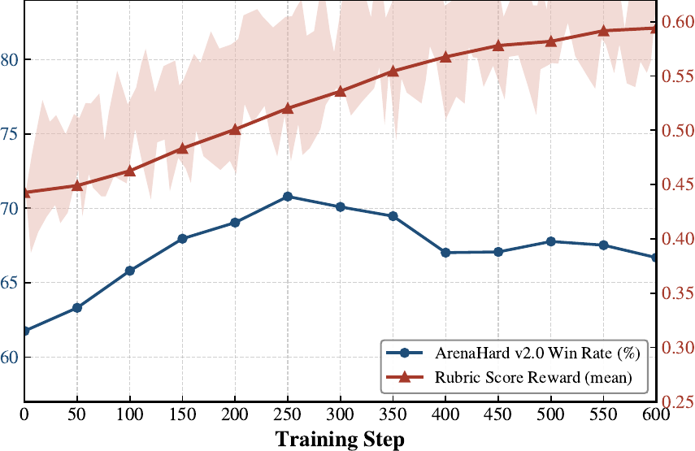
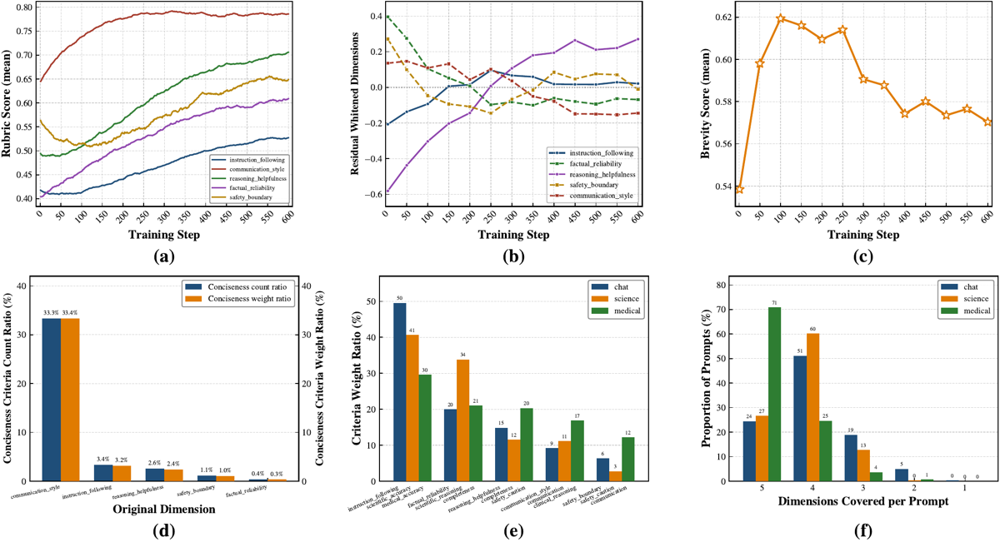
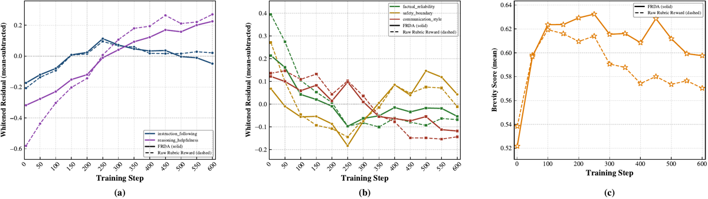

Le papier nomme et trace le failure mode « le score global monte pendant que des sous-dimensions de la rubrique baissent » (Intra-Rubric Reward Divergence), puis propose deux correctifs d'agrégation d'advantage : FRDA (z-score par dimension à l'intérieur du groupe GRPO, puis moyenne à poids égaux) et RSDC (ajout d'un reward model de préférence comme dimension D+1, blanchie par Cholesky en dernière position pour n'en garder que le résidu non expliqué linéairement par la rubrique).
Claim principal, formulé précisément : sur le domaine Chat, pendant que le reward de rubrique agrégé monte de 0,44 à 0,595 sur 600 steps, le win rate Arena-Hard v2.0 culmine à 70,8 au step 250 puis redescend à 66,8 au step 600 [Fig. 1] ; et FRDA, à reward agrégé identique [Fig. 6], gagne +5,05 / +3,60 / +8,99 / +1,92 points de w-mean (steps 400-600) sur Arena-Hard v2.0 / ResearchQA / GPQA Diamond / HealthBench contre le raw rubric reward [Tab. 1].
⚠️ Mon évaluation en une ligne : le diagnostic est réel mais mal nommé, et le remède est mal attribué. Ce qui baisse n'est, dans les scores de dimension bruts, rien — aucune dimension ne décroît sur 600 steps [Fig. 2(a)] ; la « baisse » n'existe que dans des résidus blanchis explicitement « mean-subtracted » [axe de Fig. 7], c'est-à-dire en relatif, et dans une sous-tranche (concision) qui finit au-dessus de sa valeur au step 0. Et les trois contrôles qui décideraient si FRDA vaut son coût — placebo, baseline min sur dimensions, plafond de bruit de l'instrument de divergence — sont absents, alors que le papier fournit lui-même de quoi estimer le troisième et que cette estimation efface l'effet revendiqué (§7.0, point 13).
φ(c_k) ∈ {1..D}. D = 5 pour Chat : instruction following, factual reliability, reasoning helpfulness, communication style, safety boundary.D pour Science et Medical : non précisé dans le texte, mais lisible sur [Fig. 2(e)] — 5 également, avec des jeux de dimensions différents : Science = scientific accuracy / scientific reasoning / completeness / communication / safety caution ; Medical = medical accuracy / completeness / safety caution / clinical reasoning / communication. Les dimensions ne sont donc pas comparables d'un domaine à l'autre.D dimensions, l'affectation étant automatique. Aucune mesure d'accord inter-annotateurs, aucun taux d'erreur de φ, aucune ablation de la partition. Non précisé.w_k (échelle, provenance, valeurs) : non précisés — ils viennent de RubricHub et le papier ne les caractérise jamais. Distribution de difficulté : non précisée. Aucun filtrage (pas de pass@k, pas de dynamic sampling, pas de seuil). Aucun curriculum.D dimensions, non chiffrée.Il n'y a pas d'environnement. C'est une chaîne de notation single-turn, et le papier n'en décrit presque rien.
h_k ∈ {0,1}.r_d est une repartition du même vecteur de verdicts, et [Éq. 3] établit que le score global est exactement la moyenne pondérée des r_d. Il n'y a qu'une seule mesure dans tout le dispositif de diagnostic.max_response_length : non précisés. Seule borne inférieure déductible — [Tab. 2] rapporte des réponses de 5 180 tokens en moyenne au step 600, donc le plafond est au-delà. Taux de troncature : non mesuré.h_k de mauvaise longueur, d'un critère manquant ? Rien n'est dit. Les épisodes sans verdict sont-ils retirés du groupe ou scorés 0 ? Non précisé.σ_d est estimé sur un groupe de 8, donc un seul verdict manquant ou mal parsé dans le groupe déplace μ_d et σ_d, donc l'advantage de toutes les réponses du groupe sur cette dimension. L'agrégation par dimension augmente mécaniquement la sensibilité du reward aux pannes de parsing, et le papier ne le mentionne pas.φ et du juge, c'est l'omission la plus lourde : rien n'est reproductible sans ces deux prompts.LLM-as-judge binaire par critère, aucun vérifieur exact, aucune vérification de source. Crédit partiel au critère.
Reward de rubrique standard [Éq. 1] — hit rate normalisé par les poids :
r(x,y) = Σ_k w_k h_k(x,y) / Σ_k w_k ∈ [0,1], h_k = J(x,y,c_k) ∈ {0,1}
Reward par dimension [Éq. 2], sur les mêmes verdicts : r_d = Σ_{k∈K_d} w_k h_k / W_d, avec W_d(x) = Σ_{k∈K_d} w_k et S(x) l'ensemble des dimensions couvertes par le prompt.
Identité de décomposition [Éq. 3] : r = Σ_{d∈S} [W_d / Σ_{d'} W_{d'}] · r_d. Le score global est la moyenne pondérée des sous-dimensions — c'est une identité arithmétique, pas un résultat.
FRDA [Éq. 4-6] :
Â_{i,d} = (r_{i,d} − μ_d) / (σ_d + ε) # z-score intra-groupe, par dimension
R_i = (1/|S(x)|) · Σ_{d∈S(x)} Â_{i,d} # moyenne à POIDS ÉGAUX
A_i = (R_i − mean(R)) / (std(R) + ε) # renormalisation intra-groupe
μ_d, σ_d = moyenne et écart-type de {r_{j,d}} sur les G = 8 réponses du groupe. Différence revendiquée avec GDPO : les dimensions couvertes varient d'un prompt à l'autre, donc la moyenne ne porte que sur S(x) et non sur un jeu fixe.
RSDC [Éq. 7-9] : r_pref (Skywork-Reward-V2-Llama-3.1-8B) devient la dimension D+1, couverte par tout prompt, z-scorée comme les autres ; puis blanchiment de Cholesky dans le sous-espace couvert : Σ_{S̃(x)} = L_x L_xᵀ, ã_i = L_x^{-1} â_i, dimension de préférence placée en dernier, donc Ã_{i,D+1} est le résidu standardisé de Â_{i,D+1} après retrait de la part linéairement expliquée par les dimensions de rubrique couvertes. Agrégation à poids égaux [Éq. 9] puis renormalisation [Éq. 6].
Ce que l'agrégation n'a pas :
- aucune clause d'échec, aucun seuil, aucun veto, aucun min ;
- aucun terme additionnel : pas de KL (le mot n'apparaît jamais dans la source), pas de terme de longueur, pas de terme de format ;
- la seule non-linéarité est la standardisation, qui est une transformation affine par dimension — l'agrégation reste strictement additive en les advantages.
⚠️ Deux propriétés structurelles que le papier ne discute pas :
1. σ_d → 0 annule la dimension. Si les 8 réponses du groupe échouent (ou réussissent) identiquement sur une dimension, Â_{i,d} = 0/(0+ε) ≈ 0 : la dimension sort de l'agrégation. FRDA ne peut produire aucun signal sur un critère que la politique rate unanimement — c'est-à-dire exactement le régime où l'on a le plus besoin de signal. (À décharge : le raw rubric reward n'en produit pas davantage, la constante s'annulant dans la moyenne de groupe. FRDA ne régresse pas, il ne corrige pas le cas difficile.)
2. Symétriquement, σ_d petit mais non nul amplifie le bruit. Une dimension éparse dont l'écart intra-groupe est entièrement du bruit de juge est ramenée à variance unité et pèse autant que la dimension dense informative. C'est exactement le reproche que les auteurs adressent à leur propre ablation ADM (« a sparsely covered or noisy dimension with a wide score range dominates the aggregate ») [§5.3] — transposé d'un cran : ADM amplifie les dimensions à large étendue brute, FRDA amplifie les dimensions à faible séparation, bruit compris. Le papier affirme que le z-score règle le problème ; il le déplace, et aucun plafond de bruit ne permet de dire lequel des deux régimes domine.
Néant. C'est le constat le plus court de ce mémo et le plus lourd :
- faux positifs du juge : jamais mesurés ; faux négatifs : jamais mesurés ; dénominateurs distincts : sans objet ;
- accord juge↔humain : jamais mesuré (human n'apparaît que deux fois dans toute la source, dans « human evaluation system » et « domain-knowledgeable annotators » — jamais comme annotateur) ;
- accord inter-juges : jamais mesuré ; reproductibilité du juge : jamais mesurée ;
- plafond de bruit : absent partout, y compris sur l'instrument central (les résidus blanchis), alors que les données pour l'estimer sont dans [Fig. 7] — voir §7.0 point 13 ;
- le vérifieur n'a jamais été attaqué : pas de test de délétion, pas de sonde adversariale, pas de livrable tronqué, pas de solution dégénérée, aucun audit de ce que crédite le juge.
- Le juge ne voit que le livrable, jamais la trajectoire (horizon 1, pas de raisonnement noté).
⚠️ Position dans le corpus : ce papier suppose le juge fiable et travaille uniquement sur l'agrégation de ses verdicts. Tout son diagnostic repose donc sur la supposition que les verdicts h_k de GPT-4.1-mini sont informatifs par dimension — supposition qui est exactement ce que 2610.02824 (rétention 69,8-82,0 % après délétion du contenu requis) et 2610.15778 (FPR 0,161 → 0,47 sur le meilleur juge) montrent fausse. Si le juge dérive, les r_d dérivent, et un « résidu blanchi qui décroît » est indiscernable d'une dérive différentielle de fiabilité du juge entre familles de critères. Le papier ne peut pas écarter cette lecture et n'essaie pas.
A_i de [Éq. 6] « replaces the standard GRPO advantage in the clipped surrogate objective » [§3.2]. Inspiration déclarée : GDPO (ICML 2026, NVIDIA/Univ. Washington) pour le multi-reward.ε_clip (l'objectif est dit « clipped », la valeur est absente), valeur de ε dans [Éq. 4] (« a small constant »), température de rollout, longueur max, optimiseur, warmup, schedule, nombre d'epochs d'update par batch, on/off-policy, framework (verl ? OpenRLHF ? non précisé), seed.Σ pour RSDC : non précisée, et c'est un trou méthodologique de premier ordre. [Éq. 8] dit que Σ_{S̃(x)} est « the corresponding principal submatrix of the covariance Σ of all D+1 dimension advantages » — mais sur quoi Σ est-elle estimée ? Sur le groupe de 8 ? sur le batch de 32×8 ? en moyenne mobile ? Rien. Or avec D+1 = 6 dimensions et G = 8 échantillons, une covariance 6×6 estimée intra-groupe est quasi singulière et sa factorisation de Cholesky numériquement instable ; aucun shrinkage, aucune régularisation, aucun traitement du cas non-défini-positif n'est mentionné, alors que [Éq. 7] exige Σ définie positive. Non précisé = non reproductible.p-ième coordonnée blanchie est le résidu de v_p régressé sur ses prédécesseurs [Éq. 7]. Les auteurs l'exploitent explicitement pour RSDC (« Placing the global preference last strips its linear overlap »), ce qui est correct et malin — mais l'ordre des 5 dimensions de rubrique dans le diagnostic [Fig. 2(b)] et [Fig. 7] n'est ni donné, ni justifié, ni soumis à sensibilité. ⚠️ Conséquence : quelle dimension « décline » est une fonction d'un ordre arbitraire non publié. Permuter factual_reliability et reasoning_helpfulness échange une partie de leur résidu. C'est le degré de liberté non déclaré le plus dommageable du papier, parce qu'il porte sur le phénomène titre.Le papier est une étude de failure mode. Quatre cas, dont deux traités sérieusement.
| # | Comportement | Détection | Correction | La correction est-elle évaluée ? |
|---|---|---|---|---|
| 1 | Rubric hacking agrégé : reward de rubrique ↗ monotone, win rate Arena-Hard ↘ après le step 250 | [Fig. 1] : reward 0,44→0,595 vs win rate 70,8 (step 250) → 66,8 (step 600) | FRDA | Oui, sur 4 benchmarks [Tab. 1] — mais une seule graine, et le proxy de dégradation se retourne sur GPQA (§7.0, pt. 12) |
| 2 | Intra-Rubric Reward Divergence : résidus blanchis de factual_reliability, communication_style, safety_boundary en baisse ; concision en baisse depuis le step 100 |
[Fig. 2(b,c)], recoupée par la part de poids 33,4 % [Fig. 2(d)] | FRDA | Oui, mais sur un instrument sans plafond de bruit, et l'écart revendiqué est inférieur au désaccord step-0 du même instrument (§7.0, pt. 13) |
| 3 | Length inflation : réponses 3 744 → 5 180 tokens sur les steps 400-600 | [Tab. 2] | FRDA (effet de niveau) | Oui et honnêtement tabulé — et le résultat est plus faible que l'énoncé : FRDA est 12 à 30 % plus court à chaque checkpoint mais sa croissance sur 400→600 est la même (+37,1 % contre +38,4 %). « FRDA limits excessive response growth » [§5.3] est vrai du niveau, faux de la croissance. |
| 4 | Nouveau déséquilibre introduit par un correctif naïf : ADM (moyenne égale des r_d bruts) tombe sous la baseline, Δ = −2,65 |
[Tab. 3] | z-score avant agrégation (FRDA) | Oui — c'est la meilleure ablation du papier et le seul résultat négatif publié |
Non traités, non détectés, et que le reward rend plausibles :
- l'amplification de bruit par z-score sur dimension éparse (§3, point 2) — symétrique exact du cas 4, jamais testé ;
- l'annulation des dimensions unanimement ratées (σ_d → 0) — jamais mentionné ;
- la dérive de fiabilité du juge par famille de critères, qui mimerait parfaitement le phénomène titre — jamais écartée ;
- le hacking du RM de préférence sous RSDC : un Bradley–Terry 8B est l'objet le plus documenté du champ pour le biais de longueur et de style, il porte 1/6 de l'advantage sous RSDC, et le papier n'évalue RSDC que sur Arena-Hard v2.0, un benchmark de win rate conversationnel — c'est-à-dire précisément la distribution que ce RM approxime. Aucun axe tenu hors reward n'est mesuré pour RSDC.
⚠️ Verdict de section : le papier détecte bien ce qu'il a instrumenté (un axe externe, Arena-Hard, et la longueur), et rien de ce qu'il n'a pas instrumenté. Conforme à la règle du corpus — ce qui n'est pas dans le reward disparaît sans signature, et ce qui n'est pas dans l'instrumentation n'apparaît jamais.
La section la plus vide du papier. Débit de rollouts, sync/async, parallélisme, goulot d'étranglement, coût par step, nombre et type de GPU, framework RL, service de juge, gestion des rate limits OpenAI, politique de retry : tout est non précisé. Aucune heure-GPU, aucun dollar.
Les deux seuls faits d'infra exploitables sont structurels et positifs : 1. FRDA est gratuit en appels de juge — « Reusing the judge verdicts » [Éq. 2]. Le budget de juge est donc apparié par construction entre raw rubric reward, Dropout 30/50 % et FRDA : même nombre d'appels, même juge, même prompt de juge. C'est le seul contrôle de budget du papier, et il est exact. 2. RSDC n'est pas gratuit : un forward Skywork-8B par rollout (≈ 256/step, calcul à moi), plus l'inversion d'une Cholesky par prompt. Surcoût non chiffré.
⚠️ À noter pour un portage : les 1,54 × 10⁵ appels de juge par run (calcul à moi) sont le poste dominant et ils sont identiques pour la baseline et pour FRDA — donc l'argument « FRDA mérite d'être essayé » tient principalement à son coût marginal nul, pas à la force de sa preuve.
Les chiffres de l'abstract et de l'intro, un par un. ⚠️ Avertissement de méthode : le papier n'a pas d'annexe et une grande partie de son diagnostic n'est que dans des figures, sans table. Les valeurs marquées (lu sur Fig.) sont relevées au pixel, à ±0,005 en score et ±0,3 en point de benchmark.
| # | Claim | Source dans le corps | Verdict |
|---|---|---|---|
| 1 | « as the total rubric score increases, certain sub-dimension scores systematically decrease » [abstract] | [Fig. 2(a,b,c)] | SUR-GÉNÉRALISÉ — c'est la correction centrale de ce mémo. En scores de dimension bruts [Fig. 2(a)], aucune dimension ne décroît sur 0→600 : communication_style 0,65→0,785 (plateau dès ~step 300), reasoning_helpfulness 0,49→0,705, safety_boundary 0,565→0,65 (avec un creux à 0,515 vers le step 90), factual_reliability 0,40→0,61, instruction_following 0,415→0,525 (lu sur Fig. 2(a)). La décroissance n'existe que (i) dans les résidus blanchis, dont l'axe de [Fig. 7] indique « Whitened Residual (mean-subtracted) » — une baisse y signifie « croît moins vite que ce que prédisent linéairement les autres dimensions », pas une perte absolue ; et (ii) dans la sous-tranche concision [Fig. 2(c)]. Réglage où c'est vrai : domaine Chat, en espace blanchi, en relatif. |
| 2 | Déclin de la concision : « their scores also decline steadily » [§1] | [Fig. 2(c)] | CONFIRMÉ mais borné : Brevity Score 0,538 (step 0) → pic 0,619 au step 100 → 0,570 au step 600 (lu sur Fig. 2(c)), soit −0,049 depuis le pic sur 500 steps. ⚠️ Mais le point final (0,570) reste au-dessus du step 0 (0,538) : sur l'axe même qui porte le phénomène, aucune capacité n'est perdue par rapport à la politique de base. Formulation exacte : la concision cesse de progresser et régresse vis-à-vis de son propre pic, pas sous la base. |
| 3 | « they account for 33.37 % of the communication style dimension's weight » [§1] | [Fig. 2(d)] | CONFIRMÉ : 33,4 % de ratio de poids, 33,3 % de ratio de comptage pour communication_style (contre 3,2 % instruction_following, 2,4 % reasoning_helpfulness, 1,0 % safety_boundary, 0,3 % factual_reliability). La figure arrondit à une décimale ; le 33,37 % de l'intro en est la version non arrondie. |
| 4 | « a single prompt covers only 2--5 semantic dimensions » [§1] | [Fig. 2(f)] | CONFIRMÉ littéralement, SUR-GÉNÉRALISÉ dans le cadrage. Les chiffres : 5/4/3/2/1 dims = Chat 24/51/19/5/0 %, Science 27/60/13/0/0 %, Medical 71/25/4/1/0 %. Le « only » suggère une couverture clairsemée ; avec D = 5, le mode est 4 ou 5, et en Medical 71 % des prompts couvrent les 5 dimensions. La couverture est donc quasi complète relativement au jeu de dimensions déclaré. L'« absence » que RSDC prétend combler est une absence relative à un ensemble plus large que le papier n'énumère jamais. |
| 5 | « (2) dimension absence, leading to a systematic gap between rewards and true quality » [abstract] | — | INTROUVABLE. Aucune quantité nommée « gap between reward and true quality » n'est mesurée pour l'absence. Le seul écart externe mesuré [Fig. 1] est attribué en §1 au déséquilibre (communication style), pas à l'absence. Et RSDC n'est jamais évalué sur une métrique de divergence : son seul résultat est +2,50 de w-mean Arena-Hard [Tab. 4]. Le second pilier du diagnostic n'est pas mesuré. |
| 6 | « RSDC […] mines evaluation dimensions implicitly encoded in a holistic preference signal » [abstract] | [§3.3, Tab. 4] | INTROUVABLE comme preuve. Rien dans le papier ne caractérise ce que contient la dimension résiduelle : pas d'interprétation, pas de corrélation avec un axe nommé, pas d'audit, pas d'exemple. La seule évidence est +1,45 de w-mean sur FRDA+OP, un benchmark, une graine. Le mécanisme est invérifiable et non auditable par construction : c'est un scalaire résiduel, pas un critère lisible. |
| 7 | FRDA : « Δ = +5,05 sur Arena-Hard v2.0, +3,60 sur ResearchQA, +8,99 sur GPQA Diamond » [§5.2] | [Tab. 1] | CONFIRMÉ (w-mean FRDA 72,46 / 83,16 / 49,70 vs raw 67,41 / 79,56 / 40,71). |
| 8 | « exceeding the better Dropout variant on each by +2,92, +1,40, +4,75 » [§5.2] | [Tab. 1] | CONFIRMÉ (72,46−69,54 ; 83,16−81,76 ; 49,70−44,95). Arithmétique exacte. |
| 9 | Medical : « FRDA still improves over raw rubric reward (Δ=+1,92) and performs on par with Dropout » [§5.2] | [Tab. 1] | CONFIRMÉ, et honnête : FRDA w-mean 55,68 vs Dropout 30 % 55,54 (+0,14), et FRDA perd sur le Peak (56,77 contre 57,40). Les auteurs ne masquent pas le seul bras où ils sont battus. |
| 10 | « At step 600, the average length is 4 496 under FRDA, compared with 5 180 under raw rubric reward » [§5.3] | [Tab. 2] | CONFIRMÉ, mais voir §5 cas 3 : la croissance relative est identique (+37,1 % vs +38,4 % sur 400→600). |
| 11 | « ADM falls below even the raw-rubric-reward baseline (Δ = −2,65) » [§5.3] | [Tab. 3] | CONFIRMÉ (64,76 vs 67,41). |
| 12 | « FRDA mitigates rubric hacking with more stable improvements » [abstract] | [Tab. 1] | CONTREDIT sur un benchmark sur quatre, et c'est celui qui porte le plus gros Δ. Avec le propre proxy de dégradation du papier (Peak − w-mean, c'est-à-dire la chute depuis le pic vers la fenêtre 400-600) : Arena-Hard −1,79 FRDA contre −3,38 raw ✓, ResearchQA −0,31 contre −0,41 ✓, HealthBench −1,09 contre −1,45 ✓, mais GPQA Diamond −5,86 FRDA contre −3,23 raw ✗. Sur GPQA, FRDA se dégrade davantage que la baseline qu'il doit protéger, et [Fig. 5] montre pourquoi : la courbe FRDA monte à 52,5 au step 400 puis retombe à 45,5 au step 550 (lu sur Fig. 5). Les deux valeurs : −5,86 contre −3,23. |
| 13 | « FRDA's decline is visibly shallower » pour les dimensions déclinantes [§5.3] | [Fig. 7(a,b)] | CONTREDIT par l'instrument lui-même — le point technique le plus important du mémo. Au step 0, les deux runs sont la même politique (Qwen3-4B, mêmes rubriques, même juge) : tout écart y est du bruit d'échantillonnage plus l'incomparabilité des deux blanchiments (chaque run est blanchi avec sa propre Σ, donc ni l'échelle ni le zéro ne sont communs). Écarts au step 0 (lus sur Fig. 7) : safety_boundary 0,07 (FRDA) vs 0,27 (raw) = 0,20 ; factual_reliability 0,215 vs 0,395 = 0,18 ; reasoning_helpfulness −0,315 vs −0,58 = 0,27 ; communication_style 0,125 vs 0,135 = 0,01 ; instruction_following −0,175 vs −0,215 = 0,04. Écarts au step 600 — l'effet revendiqué : communication_style −0,12 vs −0,145 = 0,025 ; factual_reliability −0,06 vs −0,065 = 0,005 ; safety_boundary −0,01 vs +0,045 = −0,055, de signe défavorable à FRDA. L'effet est d'un ordre de grandeur sous le désaccord step-0 du même instrument, et sur une des trois dimensions il va dans le mauvais sens. Le papier fournit gratuitement son propre plafond de bruit en traçant le step 0, et ne le lit pas. |
| 14 | « Figure 6 rules this out : […] FRDA's aggregate rubric reward closely tracks that of raw rubric reward at nearly every step, with no delay » [§5.3] | [Fig. 6] | CONFIRMÉ — et c'est le meilleur contrôle du papier. Courbes quasi superposées dans les trois domaines ; au step 600, Chat 0,592 (FRDA) vs 0,600 (raw), Science ~0,717 vs ~0,729, Medical ~0,72-0,74 (lu sur Fig. 6). Le gain n'est donc pas un ralentissement de l'optimisation. |
| 15 | « OP alone achieves a w-mean of 77,08, exceeding raw rubric reward by 9,67 points » [§5.4] | [Tab. 4] | CONFIRMÉ (77,08 − 67,41). ⚠️ Et le corollaire que le papier n'écrit jamais : OP (77,08) dépasse aussi FRDA (72,46) de 4,62 points. Sur le benchmark titre, jeter la rubrique et utiliser un RM de préférence 8B sur étagère bat la méthode proposée de 4,6 points. Les auteurs comparent correctement Δ(RSDC) à OP — choix honnête — mais ne formulent jamais ce que cela implique du rubric-RL lui-même. À décharge : Arena-Hard v2.0 est un win rate conversationnel, c'est-à-dire la cible même pour laquelle Skywork-Reward-V2 a été curé ; OP n'est testé sur aucun des trois autres benchmarks. |
| 16 | « Experiments in chat, science, and medical domains indicate that FRDA […], while RSDC outperforms both single-reward training and naive multi-reward aggregation » [abstract] | [§5, Limitations] | SUR-GÉNÉRALISÉ pour RSDC. La structure de phrase rattache les trois domaines à la proposition entière ; RSDC n'est évalué que sur Chat / Arena-Hard v2.0. Le corps le dit sans ambiguïté (« we validate RSDC on the Chat domain » [§5]) et les Limitations l'assument (« we validate RSDC only on chat »). L'abstract seul est trompeur. |
| 17 | « RSDC achieves the highest peak and w-mean, at 81,20 and 79,58 […] exceeds OP by 2,50, MR by 1,46, FRDA+OP by 1,45 » [§5.4] | [Tab. 4] | CONFIRMÉ arithmétiquement. ⚠️ Mais l'écart qui attribue le whitening (le cœur de RSDC) est RSDC − FRDA+OP = +1,45 point de w-mean, une graine, un benchmark, 5 checkpoints corrélés — en-dessous de toute barre de significativité que le papier permette d'évaluer, puisqu'il n'en fournit aucune. |
Verdict de la 7.0 : aucun chiffre tabulé n'est faux, et l'arithmétique interne est irréprochable. Mais la proposition titre est sur-généralisée (pt. 1 : rien ne décroît en absolu), le second pilier du diagnostic n'est pas mesuré (pt. 5), la preuve dimensionnelle du remède est sous le bruit de son propre instrument (pt. 13), la stabilité revendiquée se retourne sur le benchmark au plus gros Δ (pt. 12), et le papier contient, sans le dire, l'argument que toute sa machinerie est battue par un RM de préférence sur étagère (pt. 15). ⇒ case coherence = 0.
[Tab. 1], Qwen3-4B, Peak = max sur 12 checkpoints (steps 50-600), w-mean = moyenne sur 5 checkpoints (400-600) :
| Méthode | Arena-Hard v2.0 | ResearchQA | GPQA Diamond | HealthBench |
|---|---|---|---|---|
| Qwen3-4B (base) | 61,75 | 60,65 | 36,36 | 34,59 |
| Raw Rubric Reward | 70,79 / 67,41 | 79,97 / 79,56 | 43,94 / 40,71 | 55,21 / 53,76 |
| Dropout 30 % | 72,35 / 68,68 (+1,27) | 82,05 / 81,76 (+2,21) | 46,46 / 43,94 (+3,23) | 57,40 / 55,54 (+1,78) |
| Dropout 50 % | 72,70 / 69,54 (+2,13) | 81,80 / 81,41 (+1,86) | 47,47 / 44,95 (+4,24) | 57,38 / 55,33 (+1,57) |
| FRDA | 74,25 / 72,46 (+5,05) | 83,47 / 83,16 (+3,60) | 55,56 / 49,70 (+8,99) | 56,77 / 55,68 (+1,92) |
[Tab. 4], Arena-Hard v2.0 uniquement : Raw 70,79/67,41 · OP 78,03/77,08 · MR 79,00/78,12 · FRDA+OP 79,03/78,13 · RSDC 81,20/79,58.
⚠️ Sur la métrique « Peak » : c'est un maximum sur 12 évaluations à graine unique, donc un estimateur biaisé vers le haut, et biaisé davantage pour les runs les plus bruités. FRDA étant visiblement le run le plus bruité sur GPQA [Fig. 5], son Peak de 55,56 est la statistique la moins fiable du papier. La w-mean est le bon choix de métrique et les auteurs ont raison d'en faire le support de Δ ; mais ses 5 checkpoints sont corrélés (mêmes 50-step incréments d'un même run), donc ce n'est pas une moyenne sur 5 échantillons indépendants et elle ne réduit pas la variance d'un facteur √5.
Deux, et elles sont bien posées : 1. ADM [Tab. 3] — isole le niveau statistique de l'équilibrage (reward brut vs advantage) et produit un résultat négatif publié (Δ = −2,65, sous la baseline). C'est la meilleure page du papier : elle établit que « équilibrer les poids » naïvement est pire que ne rien faire, ce qui est exactement le genre de résultat que le corpus réclame et qu'on publie rarement. 2. MR / FRDA+OP / RSDC [Tab. 4] — isole la source (préférence seule vs rubrique seule vs somme) puis le whitening (FRDA+OP vs RSDC). Décomposition correcte, mais tout l'écart attribué au whitening tient en +1,45 point.
Ce que les ablations ne couvrent pas : la partition φ (aucune variante de D, aucun φ alternatif, aucune partition aléatoire de contrôle), l'ordre de Cholesky, l'estimateur de Σ, et toute baseline non additive.
| Case | Verdict | Justification |
|---|---|---|
baselines |
1 | Raw rubric reward + Rubric Dropout 30 %/50 % au même modèle, mêmes 600 steps, même lr, même batch, mêmes 8 rollouts, mêmes prompts, même juge — et surtout même budget d'appels de juge par construction (verdicts réutilisés, [Éq. 2]). Appariement réel, pas une comparaison à un leaderboard. Réserve mineure : les taux de dropout sont « directly adopted » de la publication d'origine, non retunés pour ce réglage [§5.1]. |
ablation |
1 | ADM [Tab. 3] isole le niveau de l'équilibrage ; OP/MR/FRDA+OP [Tab. 4] isolent la source puis le whitening. La contribution revendiquée est séparée de ses alternatives naturelles. |
variance |
0 | Aucune graine, aucun intervalle de confiance, aucune barre d'erreur sur un score de test. Le seul ruban du papier est sur le reward de rubrique en [Fig. 1], jamais sur une performance. Le Δ titre (+8,99) repose sur un run unique d'un benchmark dont la taille n'est même pas rappelée, avec des oscillations de >7 points entre checkpoints adjacents [Fig. 5]. |
coherence |
0 | Verdict de la 7.0 : claim titre sur-généralisé (pt. 1), second pilier non mesuré (pt. 5), preuve dimensionnelle sous le bruit de son instrument (pt. 13), stabilité contredite sur GPQA (pt. 12), scope RSDC sur-annoncé (pt. 16). |
eval |
0 | Contamination : traitée pour ResearchQA ↔ RubricHub-Science, ignorée pour HealthBench ↔ RubricHub-Medical (HealthBench est lui-même un corpus de rubriques) et pour Arena-Hard ↔ RubricHub-Chat. Juge jamais validé : pas d'accord juge↔humain, pas d'accord inter-juges, pas de FP/FN, pas de plafond de bruit, pas de prompt de juge publié. Modèle juge d'Arena-Hard v2.0 et de HealthBench : non précisé. |
repro |
0 | Aucune URL de code ni de données dans tout le papier (grep -io 'http\|github\|available\|release' sur la source : zéro hit). Prompts de juge et de classification non recopiés, D de deux domaines sur trois non donné dans le texte, ordre de Cholesky non donné, estimateur de Σ non donné, KL/clip/température/seed non donnés. URLs testées le 2026-10-20 : https://arxiv.org/abs/2610.26685 → 200 (le papier) ; https://huggingface.co/Skywork/Skywork-Reward-V2-Llama-3.1-8B → 200 (le RM de préférence, seul composant publiquement récupérable). Aucune URL d'environnement à tester : il n'y en a pas. |
evidence : 2/6 — manquant : variance, coherence, eval, repro.
Plausible mais fragile, avec un diagnostic à reformuler et un remède à re-attribuer.
Ce qui tient : le phénomène agrégé [Fig. 1] est net et confirmé par une mesure externe ; les baselines sont réellement appariées, budget de juge compris ; le contrôle « ce n'est pas un ralentissement » [Fig. 6] est le bon contrôle et il est concluant ; l'ablation ADM est un résultat négatif honnête et instructif ; FRDA coûte zéro appel de juge supplémentaire.
Ce qui ne tient pas : (1) « des sous-dimensions chutent » est faux au sens absolu — rien ne chute, certaines croissent moins vite, et l'unique axe en baisse réelle (concision) finit au-dessus de la politique de base ; (2) la preuve que FRDA corrige la divergence dimensionnelle est un écart de 0,005 à 0,055 sur un instrument dont le désaccord au step 0, politiques identiques, vaut 0,18 à 0,27 ; (3) la propriété titre dépend d'un ordre de coordonnées de Cholesky jamais publié ni testé en sensibilité ; (4) zéro graine ; (5) le papier contient l'argument, non formulé, que son propre pipeline de rubrique est battu de 4,62 points par un RM de préférence sur étagère.
À répliquer avant d'en dépendre. Le gain de 4 points sur Arena-Hard w-mean est assez gros pour mériter une réplication à 3 graines ; le +8,99 GPQA ne doit pas être cité.

Ce qu'il faut voir : la figure qui justifie le papier, et la seule qui oppose le reward à une mesure tenue hors du reward. Domaine Chat, Qwen3-4B, 600 steps. Le reward de rubrique (rouge, axe de droite) monte monotonement de 0,44 à 0,595 sans jamais fléchir ; le win rate Arena-Hard v2.0 (bleu, axe de gauche) monte de 61,8 à 70,8 au step 250, puis redescend à 66,8 au step 600 — soit −4,0 points depuis le pic, sur 350 steps, pendant que le reward gagne encore ~0,08. ⚠️ Deux détails à relever : le ruban d'incertitude est sur le reward (la courbe qu'on n'a pas besoin de qualifier) et pas sur le win rate (la courbe qui porte la conclusion) ; et l'onset de la divergence est au step 250, ce qui tombe exactement dans la plage d'onsets du corpus (100, 170, 250, 450) et confirme qu'un dispositif d'audit à 5-6 paliers avant le step 500 est le bon réglage.

Ce qu'il faut voir : six panneaux, et c'est en les recoupant que le papier se fissure. (a) est le panneau décisif : aucune des cinq dimensions ne décroît sur 600 steps — communication_style 0,65→0,785 (elle plafonne dès ~step 300, ce que la légende appelle correctement « stagnating »), factual_reliability 0,40→0,61, instruction_following 0,415→0,525. Donc le mot « decrease » de l'abstract ne décrit pas (a). (b) porte toute la charge : résidus blanchis, factual_reliability +0,40→−0,07, safety_boundary +0,27→−0,02, communication_style +0,14→−0,14, contre reasoning_helpfulness −0,58→+0,28 et instruction_following −0,20→+0,02 — mais ce sont des résidus mean-subtracted (axe de [Fig. 7]), donc du relatif, et leur identité dépend d'un ordre de coordonnées non publié. (c) est la seule baisse absolue : brevity 0,538 → pic 0,619 (step 100) → 0,570 (step 600), toujours au-dessus du step 0. (d) valide le recoupement du papier : 33,4 % du poids de communication_style est de la concision, contre ≤ 3,2 % ailleurs. ⚠️ Le recoupement qui tue le récit causal est (b) × (e) : l'histoire est « les dimensions denses dominent, les éparses sont sacrifiées ». Poids Chat [(e)] : instruction_following 50 %, factual_reliability 20 %, reasoning_helpfulness 15 %, communication_style 9 %, safety_boundary 6 %. Tendances du résidu [(b)] : +0,22 / −0,47 / +0,86 / −0,28 / −0,29. La dimension qui chute le plus fort est la 2ᵉ plus dense (factual_reliability, 20 %) et celle qui monte le plus fort est la 3ᵉ (reasoning_helpfulness, 15 %) : le rang de densité ne prédit pas le rang de tendance. Le mécanisme ne tient que pour les deux dimensions les plus éparses. (f) : le mode de couverture est 4-5 dimensions sur 5, et 71 % des prompts médicaux couvrent les 5 — « only 2-5 » est un cadrage, pas une rareté.

Ce qu'il faut voir : la figure censée prouver que FRDA corrige la divergence, et le step 0 la désarme. Au step 0 les deux runs sont la même politique de base, donc tout écart y est du bruit plus l'incomparabilité de deux blanchiments ajustés chacun sur sa propre covariance. Lisez les écarts step-0 : safety_boundary 0,07 vs 0,27, factual_reliability 0,215 vs 0,395, reasoning_helpfulness −0,315 vs −0,58 — soit 0,18 à 0,27 d'écart là où il ne devrait rien y avoir. Lisez ensuite l'effet revendiqué au step 600 : factual_reliability −0,06 vs −0,065 (0,005), communication_style −0,12 vs −0,145 (0,025), et safety_boundary −0,01 vs +0,045, c'est-à-dire FRDA en dessous de la baseline, de signe défavorable. L'effet est 5 à 50 fois plus petit que le désaccord step-0 du même instrument. Le panneau (c) est un peu plus solide parce qu'il porte sur un score brut et non sur un résidu — brevity 0,598 (FRDA) vs 0,570 (raw) au step 600, soit +0,028 — mais l'écart step-0 y est encore de 0,017 (0,538 vs 0,521), soit 60 % de l'effet final ; ⚠️ et ce 0,521 contredit [Fig. 2(c)], qui donne 0,538 au step 0 pour ce qui devrait être le même run raw : écart non expliqué entre deux figures du même papier. Conclusion opérationnelle : tracer le step 0 des deux bras est un plafond de bruit gratuit — ce papier l'a tracé et ne l'a pas lu, et c'est le réflexe à importer.
| Ingrédient | Choix du papier | Équivalent juridique | Transfert | Ce qui manque |
|---|---|---|---|---|
| Source des tâches | 6 400 prompts/domaine échantillonnés de RubricHub, rubriques entièrement générées par LLM, aucune provenance humaine, aucun filtrage, aucun curriculum [§5.1] | mémos et questions de recherche Harvey LAB / Vals LRB, dossiers internes ; rubrique par type de livrable, rédigée par un avocat senior | non | tout ce qui compte : provenance experte, hiérarchie de criticité, distribution de difficulté, séparation par juridiction. Le papier ne caractérise même pas les w_k dont dépend tout son diagnostic de déséquilibre |
Décomposition en dimensions sémantiques (partition stricte par GPT-5.4, D = 5, principes abstraction / indépendance / complétude) [§3.1] |
dimensions d'un livrable juridique : qualification des faits · règle applicable et juridiction · exactitude et vérifiabilité des citations · complétude des moyens · réserves et limites du conseil · forme | adaptable, et c'est l'ingrédient structurant à reprendre | la contrainte « every criterion belongs to exactly one dimension » est fausse en droit : « omettre de soulever la prescription » relève simultanément de la règle applicable et de la complétude. Et la partition est reconnue variable entre annotateurs [Limitations], sans aucun accord mesuré | |
| Vérifieur | LLM-as-judge binaire par critère, un seul appel par réponse, GPT-4.1-mini, prompt non publié, FP et FN jamais mesurés, jamais attaqué [§3.1] | juge sur rubrique + vérifieur exact de citation (la source existe · elle dit ce qui est allégué · elle est en vigueur à la date · la juridiction est la bonne) | non | le papier ne touche jamais au vérifieur : il suppose les verdicts informatifs par dimension. En droit, c'est précisément la supposition à ne pas faire, et le corpus la contredit (rétention 69,8-82 % après délétion, 2610.02824 ; FPR 0,161→0,47, 2610.15778) |
| Harness / outils | single-turn, zéro outil, zéro recherche, zéro exécution, horizon 1 | multi-turn : recherche de jurisprudence, lecture de sources, vérification d'entrée en vigueur, citation checking | non | tout. Et le trou d'infra spécifique à FRDA : un verdict mal parsé dans un groupe de 8 déplace μ_d et σ_d, donc l'advantage de tout le groupe sur cette dimension — le papier ne dit pas ce que devient un épisode sans verdict (retiré du groupe ? scoré 0 ? non précisé) |
| Algo — agrégation d'advantage par dimension (FRDA) | z-score de r_d intra-groupe (G = 8), moyenne à poids égaux sur S(x), renormalisation [Éq. 4-6] ; coût marginal en appels de juge : zéro |
égaliser le poids effectif de « complétude des moyens » (éparse, 2-3 critères) et de « forme / clarté » (dense, 15 critères) | adaptable — le meilleur ingrédient du papier | aucune clause d'échec, et l'agrégation reste additive : égaliser les poids ne rend aucun critère dominant. Plus grave pour le droit : si les 8 rollouts ratent identiquement un critère éliminatoire, σ_d → 0 et la dimension sort de l'agrégation — zéro gradient exactement là où il faut le plus |
| Complétion des dimensions manquantes (RSDC) | RM de préférence Bradley–Terry 8B ajouté comme dimension D+1, blanchi par Cholesky en dernier pour ne garder que le résidu linéaire [§3.3] |
? | non | il n'existe pas de RM de préférence juridique, les Limitations le disent pour la médecine et la science (« specialized preference reward models […] are not readily available off the shelf ») ; et ce que contient le résidu n'est jamais caractérisé, donc le mécanisme est non auditable — l'inverse de ce qu'un reward signable par un avocat exige |
| Curriculum | aucun, ni de tâches ni de reward | pondération progressive vers les familles de moyens ratées | non | le papier n'en a pas et ne prétend pas en avoir |
| Anti-hacking | FRDA (structurel) + Rubric Dropout en baseline (régularisation) ; aucun test de robustesse du vérifieur, aucune sonde, aucune délétion, aucun livrable tronqué | test de délétion apparié · sonde adversariale fixe · ventilation FP/FN par famille de critères | non | l'intégralité de l'audit de vérifieur. Ce papier corrige l'agrégation de verdicts supposés bons ; il est orthogonal à la question « les verdicts sont-ils bons » et ne doit pas être lu comme y répondant |
| Plafond de bruit gratuit : tracer le step 0 des deux bras | fait sans le vouloir en [Fig. 7] : écarts step-0 de 0,18-0,27 sur une politique identique, contre un effet final de 0,005-0,055 | à imposer sur toute courbe comparative de notre instrumentation | direct — à copier immédiatement, coût nul | rien ne manque : c'est un réflexe de lecture et de tracé, pas un mécanisme. ⚠️ Il invalide ici la conclusion de ceux qui l'ont tracé |
Réponse nette : non, et le papier ne s'en approche pas.
min, ni seuil, ni veto, ni pénalité conditionnelle, ni terme multiplicatif dans tout le papier. Une réponse peut échouer entièrement une dimension et conserver le meilleur advantage du groupe si elle bat ses pairs sur les autres. « Fair race » signifie littéralement chaque dimension vote avec le même poids, jamais chaque dimension peut opposer son veto.d est compensable par un excédent sur d'. Pour un critère éliminatoire il faut sortir de la classe additive (min, lexicographie, barrière, gate), et FRDA n'en sort pas. Le papier atteint même le résultat inverse de ce qu'on voudrait en droit : σ_d → 0 efface le critère unanimement raté.⇒ Pour une rubrique conjonctive, ce papier apporte une idée (normaliser par dimension à l'intérieur du groupe, gratuitement) et un avertissement (égaliser naïvement les niveaux bruts, type ADM, est pire que ne rien faire : −2,65). Il n'apporte aucune brique de conjonction.
La normalisation par dimension à l'intérieur du groupe, à coût d'appels de juge nul [Éq. 2 + Éq. 4]. Le point qui compte n'est pas FRDA comme méthode mais le fait, établi par [Éq. 2-3], que la décomposition par dimension est gratuite : le juge rend déjà un vecteur de verdicts en un appel, et r_d n'en est qu'une repartition. Donc, quelle que soit la règle d'agrégation retenue, tracer r_d par dimension et par checkpoint ne coûte rien et doit être allumé dès le step 0 — c'est l'instrumentation minimale pour voir « la complétude des moyens baisse pendant que la forme monte », et le corpus n'a aucune raison de s'en priver.
Second, à coût nul également : tracer le step 0 des deux bras sur toute courbe comparative (leçon involontaire de [Fig. 7]). Un écart step-0 entre deux runs issus de la même politique de base est un plafond de bruit offert ; tout effet plus petit n'est pas un effet.
Comparer trois règles d'agrégation sur une rubrique juridique à criticité hétérogène, à verdicts identiques. Construire 200 à 300 prompts juridiques (Harvey LAB-like) avec rubrique à D ≈ 6 dimensions dont une éliminatoire (« complétude des moyens » : la réponse soulève-t-elle les moyens que les faits rendent disponibles — prescription, compétence, conflit de lois), étiquetée par un juriste. Un seul appel de juge par réponse, vecteur h_k complet. Puis trois bras RL à verdicts et budget de juge rigoureusement identiques (le juge ne sait pas quel bras il sert) :
min sur les dimensions : r = min_d r_d, la baseline conjonctive triviale que le papier ne teste jamais.Plus deux bras de contrôle que le papier n'a pas : B-placebo, où φ est une partition aléatoire des critères en 6 groupes de tailles appariées (si B ≈ B-placebo, l'effet de FRDA est un effet de standardisation/dilution, pas de sémantique) ; et C′, min sur Â_{i,d} plutôt que sur r_d, pour séparer « conjonction » de « niveau statistique ».
Mesures, toutes dès le step 0 et tous les 50 steps : (i) le taux de complétude des moyens sur un jeu expert tenu hors du reward ; (ii) r_d par dimension ; (iii) la longueur ; (iv) l'écart step-0 entre bras comme plafond de bruit ; (v) 3 graines.
Résultat attendu : A dégrade la complétude des moyens pendant que son score global monte ; C la préserve nettement mieux que B, parce que seul min rend un critère éliminatoire non substituable, tandis que B ne fait qu'égaliser des poids à l'intérieur d'une somme ; et B ≈ B-placebo à ±1 point, l'effet de FRDA étant principalement statistique. Dans ce cas, la conclusion de conception est : le remède au failure mode est la conjonction, pas l'équité des poids, et FRDA n'est à garder que comme instrumentation gratuite.
Résultat qui falsifierait : B bat C sur la complétude des moyens et B > B-placebo d'un écart supérieur au plafond de bruit step-0. Cela établirait que (1) la sémantique de la partition porte un signal réel, pas seulement sa statistique, et (2) l'équité des poids suffit sans clause d'échec — auquel cas min est trop brutal (il réduit le signal à une seule dimension et peut effondrer l'apprentissage par manque de gradient), et il faut construire la rubrique juridique comme une somme équilibrée par dimension plutôt que comme une conjonction. ⚠️ Troisième issue à anticiper : si C s'effondre (reward saturé à 0, aucun gradient, parce que le min est presque toujours porté par la dimension éliminatoire que la politique rate 8/8), alors ni B ni C ne répondent, et le vrai besoin est un canal séparé pour la complétude — un reward de couverture vérifié exactement (checklist d'items attendus), hors de la rubrique agrégée. C'est l'issue que je tiens pour la plus probable, et elle se détecte dès le step 50 en regardant la part des groupes à σ = 0.
« Dans notre rubrique juridique, est-ce que le fait de rater un critère éliminatoire est compensable ? Et si non, par quelle opération — pas par quelle pondération ? »
Ce papier est utile précisément parce qu'il rend la question inévitable : il consacre tout son appareil à ré-équilibrer les poids à l'intérieur d'une somme, il démontre au passage qu'un ré-équilibrage naïf est pire que rien (ADM, −2,65), et il ne peut structurellement pas rendre un critère dominant. Si la réponse interne est « non, l'omission d'un moyen éliminatoire n'est pas compensable », alors aucune famille de méthodes de pondération ne nous concerne — ni FRDA, ni POW3R, ni Rubric Dropout — et le choix d'architecture à arbitrer n'est pas un choix de poids mais un choix d'opération d'agrégation (clause d'échec, min, canal de couverture séparé), à trancher avant d'écrire le premier harness. Corollaire à faire valoir dans la même réunion : la décomposition par dimension est gratuite ([Éq. 2] : les verdicts sont déjà là, un seul appel de juge), donc il n'y a aucune raison budgétaire de ne pas loguer r_d par dimension dès le step 0 — c'est le seul moyen de voir « la complétude baisse pendant que la forme monte », et c'est exactement ce que ce papier a vu sur du chat.